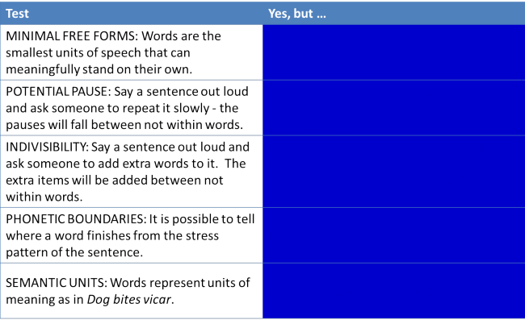

Morphology: the building blocks of language
This guide is concerned with the general theory of morphology rather than with how any one language forms words by combining morphemes. For more on that, in English, consult the guide to word formation, linked below.
 |
What is morphology? |
We'll start this guide with a definition of its subject matter.
A morpheme is
the smallest meaningful unit of a language.
and the word meaningful is emphasised
for a reason.
In this phrase, we have these 10 morphemes:
the + small + est + mean + ing + ful + unit + of + a + language.
The term meaningful here does not refer to meaning standing
alone (although it may) but to meaning in context or in combination
with other words.
For example, a function word such as it carries no meaning
without a context and co-text but in a sentence such as:
I read the book and loved it
the words book and it clearly carry meaning.
And in
John and Mary came to the show
the word and carries a meaning to the hearer / reader
relating to combining subjects although the word standing entirely
alone has no discernible meaning.
Both it and and are morphemes by this definition
and so are I, read, the, book, love, -d, John, Mary, came, to
and show.
Morphology, then, is the study of how languages form words. All languages do this and they do it in a bewildering and fascinating number of ways.
We are concerned here with how English functions in this respect but
effective teaching in this area requires at least an outline
knowledge of how your learners' language(s) function. For some
information about that, see the guide to teaching word formation,
linked below. Other languages employ morphemes in a variety of
ways using, e.g.
infixes: a rare event in English exemplified by spoonsful
or absobloodylutely.
circumfixes: unknown in English but used extensively in some
languages which add affixes in pairs to the beginning and end of a
lexeme to derive a single change in meaning or word class.
The guide to word formation, linked below, covers similar ground but extends it into other areas. This guide is concerned with understanding the theoretical bases for how words are formed in English.
 |
Identifying words |
Before we can sensibly look at what words are made of, we need to
be clear about what a word actually is. This may seem a very
simple question but it is actually rather difficult to define what a
word is in any language.
Here's a definition from Google:
a single distinct meaningful element of speech or writing, used with others (or sometimes alone) to form a sentence and typically shown with a space on either side when written or printed
As we shall see, that is not an adequate definition for our purposes. The definition is hedged with typically and sometimes and that is a sign that the definition is difficult.
 |
Task 1:
Here are some traditional tests for words in a language. Click on the table when you have filled in the right-hand column. |

(Based on Crystal, 1987:91)
Even the test for words
are things which have a space at each end when they are written down
doesn't work. (Is doesn't one word or two?)
Some languages do not follow the convention at all and all words are
written in a stream. For example,
What will you have
in Thai looks like
สิ่งที่คุณจะต้อง.
It is for these reasons that linguists prefer the term
lexeme or lexical item to the anguished
word word. A lexeme is a basic unit which can be one
word or a phrase which carries a single significance.
By this definition, all of these are lexemes because the individual
parts, where they exist, do not convey the whole meaning:
| house | terraced house | room | living room | classroom | party | the Labour Party |
| America | The USA | scissors | fountain pen | garden | market gardener | omnishambles |
Of course, one ordinary way to identify a word is to look it up
in a dictionary. Unfortunately, that won't work, either.
If you go to an online dictionary for something like
inderivability, you are very unlikely to find it but most
native speakers of English would be happy to accept that it really
is a word.
The other issue with dictionaries is that, in order to save space,
they usually list words by the root or lemma. For example, you
will find repeat as a headword or lemma in a dictionary but
repeated and repeating will normally not be listed
separately unless the words are used with a different significance.
That doesn't mean they aren't words.
So what actually is a word?
For a morphologist, a word is any item which can be derived from
the application of morphological rules. This means that even
something like computerhood, which you will certainly not
find in a dictionary, is a word because it can be derived from the
three morphemes that make it up, following normal conventions in
English. These are:
compute
the verb
+ r to make
the noun doer of the verb (or, with words that do not already end in
'e', 'er')
+ hood
to make the noun signifying state of being a doer of the verb.
Identifying morphemes |
|
|
Task
2:
Can you identify the morphemes in this list of lexemes? Click on the |
| SUGAR |
This is an easy one. The lexeme is a single
morpheme which stands alone. We can add morphemes
to it, of course, to make, e.g., sugary,
sugariness etc.
It is a free morpheme which needs no other morpheme to make sense. |
| CLASSROOM |
This is a compound formed from two
free morphemes, class
and room.
Both are nouns and they combine to make a new noun with
a new but transparent meaning. See
the guide to compounding, linked below,
for more.
|
| UGLINESS |
This is an example of a free morpheme combining with
a bound morpheme to make a new word
class.
We have taken the free morpheme, ugly, and combined it with a bound morpheme suffix, ness, to make the noun from the adjective. The suffix is a bound morpheme which cannot stand alone and carry meaning. Because the morpheme is used to derive a new word, it is called a derivational morpheme. (Do not worry about the spelling change. That is simply one of the orthographic conventions in English and makes no difference to meaning. Do not be concerned, either, with the fact that ness can be a free morpheme meaning a headland. That is an example of homonymy.) |
| TEACHERS |
This is an example of the same thing. A free
morpheme, teach,
combining with a bound morpheme,
er, to make a
personal noun from the verb. In other words, to derive a new word class.
There is a second bound morpheme,
s, which forms the
plural in English, part of how nouns decline.
|
| FLYING |
This, too, is an example of a free morpheme
combining with a bound morpheme (fly
and ing,
respectively) but in this case we have a grammatical
change, converting the base form of the verb into a
participle or a gerund, depending on context.
This is an inflexional morpheme,
determining how verbs conjugate.
|
| REPEATED |
This is slightly problematic. Often, the bound
morpheme prefix re
implies the act of doing something again, as in
rewrite,
reinforce etc.
Here, however, analysing it that way would result in the
morpheme peat
which, as a verb, carries no meaning so cannot, by
definition, be a morpheme in English. It is,
however, acceptable to analyse it that way because the
verb derives from the Latin, via French, from re, [again] + petere
[strive after; ask for]. It occurs again in, e.g.,
petition.
We have another inflexional morpheme here, ed, which forms the regular past tense in English. |
| HAMBURGER |
This, of course, can mean a person from
Hamburg
and that is an example of a free morpheme, called the
root, combining with a bound morpheme
to form the name for a person's origin. Compare
Londoner,
Parisian etc.
In this case, however, the word probably derives from the name of a beef product from Hamburg and the morpheme burger has taken on a life of its own as in cheeseburger, beefburger and veggieburger. |
| DISRESPECT |
The function of the bound morpheme,
dis, as a prefix is
clear; it means the negative. However, hidden in
here is another Latin-derived meaning of
re. The word
derives from re [back] +
specere [look].
|
| BLAIRITE |
This is an example of how new words are formed from
the general rules of a language's morphology. We
simply take the name or philosophy and add
ite or
ist. Compare
Trotskyite, Marxist, communist, sexist, Thatcherite,
Benthamite etc.
|
| REAGANOMICS |
This is a less common way to form new words called a
blend. Two words have been
fused to form a third meaning. Compare smog
[from the free morphemes smoke + fog]
or motel
[from motor + hotel].
|
| DONATION |
You can be excused for thinking that this is a noun
formed from the verb donate by dropping the 'e'
and adding the -tion
bound morpheme in the conventional way. However,
in fact the noun entered the language much earlier than
the verb which was formed later by analogy with more
usually formed verb-noun pairs such as
inflate-inflation and many more.
This is called a back formation and there is a short list in the guide to word formation of other back forms in English. |
| INEPT |
This is interesting because the bound morpheme,
in, clearly carries
a negative meaning. Unfortunately, the second
morpheme, ept,
carries no meaning. The word comes from
Latin in- [not] + aptus [apt].
The term for this kind of morpheme is a bound base (sometimes a bound root). It cannot exist alone but does not act as a prefix or suffix. Other examples are the ver in verity, the doct in doctor and the dext in dexterity. Many verbs are formed in this way, derived directly from Latin, Old French or Old English with a bound base which has no independent existence in the modern language. Examples include desiccate, modify, indemnify, enlighten and more. |
| PESTICIDE BIOCHEMISTRY |
These are examples of combining forms.
The suffix,
-icide does not alter the meaning of the word
pest or its word case (as is the case with, e.g.,
pester). The suffix instead adds a new layer of
meaning to the word and denotes killing agent.
The second example is similar but the combining form (bio-) is a prefix (the more common role of combining forms). Again, it does not alter the meaning of chemistry but it does add a new layer of meaning to it. In these cases, the words pest and chemistry are free morphemes but in many cases of the use of combining forms in English, the base is not a free morpheme. Examples are: democracy, ferroconcrete, astrology. The roots here, dem, ferro and astr do not stand alone and are describable as bound bases which can be traced to the Latin or Greek roots. Combining differs from compounding in that the outcome is not a third meaning, it is an additional meaning grafted on to the base form. |
All the technical terms are in bold
in this table.
Click here to take a test to see if
you can remember what they mean.
 |
Derivational morphemes |
As we saw above, there are two ways that derivational morphemes added to lexemes can change them.
- We can change the word class or category of a word but leave
the base meaning unchanged. For example,
- entertain (verb) → entertainment (noun)
- entertain (verb) → entertaining (adjective)
- elephant (noun) → elephantine (adjective)
- We can add morphemes which change the meaning but leave the
word class unchanged. For example,
- pleasant → unpleasant (adjectives, opposites)
- do → undo (verbs, reverse action)
Sometimes, we can add morphemes which change both the meaning and the word class. For example,
- witch (noun for a person) → bewitch (verb meaning enchant)
- list (noun) → enlist (verb meaning put or put oneself on a list of participants)
- garden (verb) → gardener (noun,
verb changing to person who does the action)
This is not the person being derived from the place but the person derived from the verb. We need to be careful to make this sort of thing clear to learners or they may think a shopper is someone who works in a shop.
Productivity of derivational morphemes |
A central concern of morphology is to investigate how productive
a derivational morpheme actually is. This does not apply to
inflexional morphemes because their role is generally fixed
grammatically
How is it, for example, that the morpheme
th can be attached to some adjectives to form the
noun (warm → warmth, wide → width
etc.) but is almost completely unproductive in forming new words in
English?
We would not, for example, take the adjective
windy and form a noun such as windith,
preferring instead to choose the ness
suffix and making windiness.
There are some interesting factors in play.
 |
Transparency |
Some morphemes have an easy-to-see relationship between the form and meaning. Here are some examples:
- -ible and
-able
It is easy to unpack a word like recordable by considering the suffix able and realising that it always produces an adjective from a transitive base verb and that it exists as a free morpheme meaning can. You can quite easily make new adjectives like this from any number of verbs, providing they take an object. The fact is that it is the only way English can form a new adjective from a verb. We have, of course, the ible morpheme in words like flexible, audible, comprehensible and so on but if you try to form an adjective from unusual or phrasal verbs you will almost always opt for able. Try it with:
prune, devolve, explode, derange, disturb, put off, turn down.
The morpheme ible is, therefore, unproductive.
There are still many extant adjectives formed from verb which employ the -ible suffix. However, removing the suffix does not usually leave a recognisable word so, for example:
audible
risible
incorrigible
etc.
Here, again, we have instances of a bound base or bound root which is no longer able to function alone. The words aud, ris and corr simply do not exist although they can be traced to Latin.
In nearly all cases, the -ible forms are more formal and less common so we have formal-informal pairings such as:
credible - believable
edible - eatable
potable - drinkable
risible - laughable
illegible - unreadable
comprehensible - understandable
etc. - nouns from adjectives
Another example is the ways in English that nouns are formed from adjectives. The two most common are:
ness: happy → happiness, sad → sadness, great → greatness etc.
ity: insane → insanity, absurd → absurdity, acid → acidity etc.
However, if you try to form new nouns from these adjectives:
blue-green, airy, snowy, freezing, wet
You will almost always opt for ness, indicating that ness is more productive than ity in this function.
This is not to say that ity is unproductive in the way that th is, but that it is less productive. It can be very productive with adjectives ending in the able morpheme. Try, e.g.,
openable, disturbable, derivable, pickupable
and -ability seems to be the form of choice although it is certainly possible to form words like openableness. - doers
Other derivational morphemes are also less productive than others. We can, e.g., form the doer of a verb by attaching the morpheme ant as in
inhabit → inhabitant
assail → assailant
claim → claimant
but this suffix is far less frequently used for this function than the ubiquitous er suffix. Try forming the doer of the action from these verbs and you'll see how much more productive the er morpheme is:
disturb, peruse, demand, accommodate
The suffix ist is even less productive in this sense although typist and telephonist exist.
Just as we saw for the able/ible distinction, the suffix or is now almost completely unproductive and is frozen into words like actor, transgressor and doctor. - Nonce words
Speakers of English frequently make up words by the addition of a derivational suffix or a small range of prefixes. We get, therefore words such as:
speakable
screwability
framableness
writingless
misdecide
travelful
unframe
disharmonise
and so on, none of which will appear in a dictionary and all of which are temporary (nonce) introductions. Nonce words are sometimes referred to as occasionalisms. - Barbarisms
This term is used by language purists to describe formations which are disparaged because acceptable and derivationally purer forms already exist. Some will not become popular but many so-called barbarisms have already entered the language. For example:
orientate is a verb formation already covered by the verb orient
preventative is an adjective whose meaning is not distinguishable from preventive
untactful is an unnecessary addition to a language which already contains tactless
educationalist is not clearly distinguishable from the current educationist
metrification does not add anything useful not covered by metrication. In fact, it adds unnecessary suffixes because there is no verb metrify or metrificate but metricate certainly exists.
and so on.
In some cases, these questionable coinages will become the usual forms, in others, they will die out.
As has been pointed out:
Ultimately, it is general usage, rather than etymological pedigree, that determines the survival of a word. (Todd & Hancock 1986:71). (Although they may, of course, mean use rather than usage.) - Combining forms
When an additional meaning is grafted on to a term by the addition of a suffix it does not usually change the word class so cannot be derivational in this sense. The guide to word formation contains more on this area and there is a list of such forms linked below. Words such as
thermometer
heliotropic
Francophone
herbicide
are examples of the use of combining form suffixes which do not change the word class (even if they are appended to recognisable words at all, which many are not).
Combining forms are, especially in academic and scientific writing, very productive indeed so recent formulations, such as anthropocene (the current geological age) are coined at will and retain their existence for many years.
For a much more complete list of the semantic functions of suffixes, see the guide to word formation, linked below.
Frequency and usefulness |
Some suffixes are simply too constrained in the number of bases
they can be attached to to make them very productive.
We can make an adverb from some nouns with the suffixes
wise
and wards as in, e.g.,
crabwise, clockwise, northwards, citywards etc.
but the number of possibilities is very limited because of the
infrequency of the resulting adverbs and the small usefulness the
concepts have.
However, the adverb forming ly is hugely productive in its
ability to produce adverbs from adjectives because the results are
both frequent and useful. It can also attach itself to the
barely limited number of participle adjectives in English. So
we can form, for example:
stunningly, interestingly, swingingly, boringly,
understandingly, reassuringly
and so on. We can even make up new adverbs on the spur of the
moment and be understood, for example:
She spoke praisingly.
 |
Other constraints |
- phonology
- some morphemes behave along phonological lines. For
example:
The verb forming ize/ise usually attaches to multisyllabic nouns and adjectives if the stress is not on the final syllable. So we get, e.g.:
random → randomize
real → realize
apology → apologize
Another verb-making suffix, en, attaches itself to single syllable adjectives but only if they end in certain phonemes (stops, and fricatives):
deep → deepen
light → lighten
broad → broaden
deaf → deafen
but not
clear → *clearen
high → *highen
in fact, we insert a 't' to conform with the phonological rule and get heighten.
This applies to prefixes, too, as we see with the choice often of im rather than in before /m/ and /p/ and ir before /r/. - etymology
- The root of a word will often determine what derivational morpheme is possible.
- For example, the adjective-forming suffix
ic will not attach to
Anglo-Saxon bases but en
will so we get:
vitriolic, metallic, dramatic
but
woollen, leaden, ashen - meaning
- The prefixes un, im, in
etc. do not attach to words with negative connotations so we
can't have:
*unvile, *impernicious, *undoleful, *unhelpless
etc. but we can have
unlovely, unappreciated, improper, unhelpful
etc.
Derivational morphemes are dealt with in greater detail in the guide to word formation, linked below.
Teaching implications of productivity and other constraints |
|
|
Task
3:
Review the sections above on aspects of productivity and the
constraints on word formation with derivational morphemes
and consider for a moment what the implications are for
teaching English. Consider, too, production vs.
comprehension. Then click here. |
- transparency
- When introducing the concepts of word formation in English,
it makes sense to start with those morphemes whose meaning is the
most transparent. They also tend to be the most
productive, of course, and therefore, the most useful.
So, start with simple affixes which have a near one-to-one relationship between form and meaning:
Suffixes like: able, ness, ity, ize/ise are good candidates.
Prefixes such as un, re, pre are also good candidates. - frequency and usefulness
- are considerations to bear in mind when deciding
on the teaching of any lexis and it is sensible to exclude
noun-making suffixes such as th
and adjective-forming suffixes such as
esque because they are either wholly or nearly
fully unproductive in English. In fact, singling out
th as a noun-former at
all is probably a waste of time. Learners do not need to
know that the noun width is formed from the adjective +
the suffix because the suffix itself is no longer productive.
It makes more sense to focus on:
Noun-forming suffixes like ness, er, ity, eer, ist rather than ant, dom, ery, hood etc.
Adjective-forming suffixes like able, less, ful, ish, ist rather than ous, ic, ian.
The adverb-forming ly rather than wards or wise.
The verb-forming ise/ize rather than fy, en. - constraints
- Phonology and meaning are the two to focus on because
etymology will only be useful in real time for learners with a
narrow range of European first languages.
It is, for example, predictable from the syllable number and stress pattern (two syllables or more, stress not at the end) that the verbs from
computer, brutal, central, economy, familiar, national, personal
etc. will all end in -ize or -ise.
The constraints on the use of en in this function are much less easily applied but phonologically, for example, deriving quieten from quiet is not too challenging once you spot the /t/ ending and from there, it is a short step to forming tighten, flatten etc.
The fact that already-negative adjectives (like ugly, vile, hateful, odious, helpless, antagonistic) do not take antonym-making prefixes but positive ones (such as kind, comfortable, generous, helpful, likeable) do is easy to grasp and the knowledge will help learners avoid a good deal of potential error. - comprehension vs. production
- Armed with a knowledge of the function of common affixes,
learners can significantly increase their receptive lexicon.
Production is harder, of course, but opting for the most productive affixes when speculating on word formation will usually pay dividends. If you want to make the opposites of these adjectives, what would you choose?
cut, read, quiet, easy, lived-in, organised, classified, worried
Participle adjectives very frequently form their opposites with the simple un.
Nouns formed from adjectives are overwhelmingly made with ness (and less frequently ity) so that's the way to bet if you want to form nouns from adjectives from, e.g.,
delightful, malicious, rocky, thrifty, dark, clever
then the natural selection is ness and you'll be right nearly all the time.
If the adjective ends in able, opt for ity:
readable, drinkable, editable, pronounceable, describable etc.
 |
Inflexional morphemes |
In English we can denote a number of grammatical constructions by
using inflexional morphemes. We usually do this by changing
the ending but, irregularly, we can also change the internal
characteristic of the lexeme (a process called mutation or ablaut
when it affects the vowel). Inflexional morphemes always, in
English, follow derivational morphemes. We get, therefore,
e.g.:
nation+al+ise+d
not
nation+al+d+ise
Inflexional morphemes include:
- Tense:
We saw above that the -ed/-d morpheme signals past tense but it also signals a past participle for regular verbs:
talk → talked
hope → hoped
and for some irregular verbs the past participle is also marked by a morpheme addition
forgot → forgotten
broke → broken
Internal changes (mutations) are also morphemic but what usually occurs is that one bound morpheme is altered and becomes a slightly different bound morpheme as in, e.g.
understand → understood
behold → beheld
English is unusual among European languages in having only one past-tense form to apply to all persons. Most other languages in this family use different endings for most of the persons and number.
It is also unusual in often having the same form for the past tense and the past participle. Other languages, such as Greek, distinguish the forms. - Aspect:
English signals progressive and other aspects by changes to the verb:
go, going, gone
Again, English is very limited in this respect having only one form of the past participle and only one of the -ing form. The -ing form, incidentally, has no irregularities. None. - Person:
Apart from the truly irregular verb be, English only signals person with the third-person -s morpheme (and then only in the singular):
speak → speaks
hang → hangs
By European language standards, this is a very limited range. In some other European languages, for example, the translation works like this:
This is not universal and, for example, all three Scandinavian languages (Norwegian, Swedish and Danish) have the same form for all the verbs in all persons (går).English French German Polish Estonian Italian I go
you go
she goes
we go
they goje vais
tu vas
elle va
nous allons
ils vontich gehe
du gehst / Sie gehen
sie geht
wir gehen
sie gehenidę
ty idź
ona idzie
idziemy
idąma lähen
sa lähed
ta läheb
me läheme
nad lähevadio vado
tu vai
lei va
andiamo
vanno
For this reason, many languages, such as Greek and Italian, routinely drop the pronoun because the person is signalled by the verb ending. The term for these languages is pro-drop incidentally, and there is more on that in the guide to types of languages, linked below. - Number:
Although there are some irregularities, English uses the s/es morpheme to signal the plural.
class → classes
house → houses
Almost all nouns function this way in English which is a simple system in comparison to many other languages (and more complex than many which do not signal the difference between singular and plural at all). - Adjectives:
English uses morphemic addition to change some adjectives from absolute to comparative or superlative:
long → longer
small → smallest
The morpheme most can also act as a suffix carrying a similar meaning of towards the extreme in words like nethermost, uppermost, hindmost etc. The morpheme more can't do that and the suffix most is now unproductive.
The added complication in English is that some adjectives cannot take the inflexion at all so we do not allow, e.g., boredest or beautifuller. The rules for when we inflect and when we use the periphrastic form are quite complex, in fact.
Other languages are often simpler in this respect. Most Romance languages, French, Spanish, Romanian, Portuguese etc. employ the periphrastic form and some, such as German, usually employ only the inflected form (although the periphrastic form is available), others, Scandinavian languages and some Slavic languages, for example, work a little like English.
Adjectives in English remain unchanged, whatever case, gender and number they are associated with. Other languages will often inflect the adjective to show case, gender and number. - Case:
Many languages, which take advantage of morphemes to signal case (nominative, accusative, dative, genitive, locative, ergative etc.) alter the nouns and other elements to show this. English generally does not do this with content words but has a slightly complex pronoun and determiner system which sometimes radically alters a morpheme to show case and sometimes simply adjusts it slightly:
and so on. A full list is available in the guide to personal pronouns.Nominative (subject) Accusative (object) Genitive (possessive) Genitive pronoun I
you
she
he
they
whome
you
her
him
them
whommy
your
her
his
their
whosemine
yours
hers
his
theirs
English also deploys the 's morpheme for the genitive:
John's, the dog's, the ship's, the government's
The fact that English has two genitive structures (the government's policy vs. the policy of the government, for example) is an added complication which leads to a good deal of unnatural language in learners and some error.
The technical term for the way in which words can have their grammatical function altered by changes to the morphology is accidence, incidentally.
Old English had many more (and much more complex) inflexions than Modern
English has retained. The loss of inflexion is one of the
most important changes to have occurred in the language. (As a
matter of simple interest, Old English was made even more
complicated by having a separate category for two people. So
we had ic (I), we (we) and
wit (we two) for example and these changed in the
accusative, dative and genitive, rather like modern German pronouns
alter.)
Many other languages, such as German, Polish, Finnish, and French
deploy a much wider range of suffixes to denote number, person, case
and gender. Other languages, such as the Chinese languages are
even more limited than English in their use of inflexions and suffixation.
 |
Suppletion
|
Occasionally, we come across a form which is clearly not derived
from what we would expect. For example, the words larger
and largest are clearly connected to and derived from the
base form large but that is not the case with the words
worse and worst acting as the comparative and
superlative forms of the word bad.
What we are dealing with is suppletion and the result is called a
suppletive form. It refers to the fact that the forms are
phonemically and (sometimes) etymologically distinct. The
origin of the word bad is somewhat obscure but the words
worse and worst are traceable to Old English
forms.
Suppletion may be complete as in the example of bad-worse
in which the words share no letters or sounds at all or it may be
quite weak as in the case of five-fifth where the words are
derived from the same root but the pronunciation has been altered so
that the spoken forms may not be recognised as connected at all.
Other common examples of suppletion in English are:
- go, went gone
- The past tense of this verb is clearly unconnected from the
base form and the past participle. The latter two come
from the Old English gan and there are cognates in most
Germanic languages, gehen in German, gaan in
Dutch and so on.
The past tense of the verb, however, is derived from the irregular past tense of the verb wend and that verb has now taken on the regular past tense forms. - three, third
- This is a weaker example because some letters and sounds are shared but hearing the words will not obviously alert people to their connection.
- one, first; two, second
- are both examples of much stronger suppletion because the word first derives from a different root from the word one (although both are traceable to Old English) and the word second is an import via French from Latin and not connected with the numeral two at all.
- far, further, farther, furthest, farthest
- are all examples of quite weak suppletion because they all derive from the same Old English root.
- be, am, is, are, was, were
- is an example of really complex suppletion. The roots are traceable but all come from a different set of words in Old English and Proto-Indo European. It is a tangle of semantically connected forms with no discernible spelling and pronunciation commonalities. The word be derives from the Old English beon (exist), the word am from eom, the word are from the plural form of beon and so on. The past tenses are traceable to the verb wesan (meaning remain). The verb has eight distinct parts in Modern English derived from at least two Old English dialects: be, am, is, are, was, were, being, been.
- good, better, best
- The first of these is traceable to Old English gōd but the two other forms come from a different source (Old English beste).
- person, people
- The first of these derives from the Old French persone and the latter from Old French peupel (itself from Latin populus). The plural persons is rare and formal.
- cow, cattle
- derive from separate roots but the latter is considered a plural collective version of the former. Other forms such as ox-oxen are referred to as suppletive affixes because they do not follow the normal morphological rules for making plurals.
- wreak, wrought
- This is a real oddity because wrought was originally the past tense of work (which is now regular in English). It still exists as a participle adjective in, e.g., wrought iron. The past forms of wreak are in principle regular (wreaked, wreaked) but it has become common to see wrought used as the past of that verb, perhaps by analogy to teach and seek.
Prefixation |
For a much more detailed look at prefixes and what they do, see
the guide to word formation. Here, we will simply list some of
the categories into which prefixes fall and the sorts of things the
morphemes do. Nearly all prefixes are bound morphemes.
Free morphemes which may look like prefixes are usually cases of
compounding so, for example, the morpheme house in
housemaster is not considered here as an example of prefixing.
See the guide to compounding for more on that, linked below.
Prefixes come in three main sorts of which the second is the most
productive by far:
- derivational prefixes
are quite rare in English and almost wholly unproductive. In earlier forms of English they were very productive and many modern words such as become, aforesaid, embolden etc. can be traced to earlier prefixation.
They include, e.g.,- en-, em- or im- forming verbs as in:
envisage
enslave
embrace
embroil
imprison - a- forming adjectives such as
ablaze
amaze
asleep - be- forming verbs such as
bewitch
bemire
bedevil
besmirch
- en-, em- or im- forming verbs as in:
- meaning-converting prefixes
which alter the meaning, but not word class of many words.
A full(er) list is available from the link below and in the guide to word formation. The list includes terms denoting:- attitude: pseudoscience, dysfunctional etc.
- negative senses: unbalanced, disbelieve, irresponsible, misuse etc.
- number: monoglot, bipedal etc.
- reversal: undo, decouple etc.
- location: submarine, superstructure etc.
- temporal: prewar, proto-language etc.
- degree or size: supermarket, overdone etc.
- combining forms
which add a layer of meaning without change the meaning of the base. These include many scientific forms such as
biochemistry
hydroelectric
petrochemical
Some words consist purely of combining forms with two bound morphemes. Examples include
democrat
xenophobe
petrology
| Related guides | |
| semantics | for more on meaning |
| types of languages | for a guide to how other languages do things differently |
| prefixes and suffixes | a PDF-formatted list of prefixes and suffixes in English |
| combining forms | a PDF formatted list of the most common combining forms in English |
| compounding | for how this type of morpheme manipulation works |
| word formation | for more on how morphemes combine in English with links to PDF lists of affixes and consideration of combining forms |
| teaching word formation | for a guide containing some consideration of how major language groups handle affixation and compounding |
References:
There's rather a lot in this area which is a much-researched field
and much of it is not relevant to teaching.
Crystal, D, 1987, The Cambridge Encyclopedia of Language,
Cambridge: Cambridge University Press
Lieber, R, 2009, Introducing Morphology, Cambridge:
Cambridge University Press
Todd, L & Hancock, I, 1986, International English Usage,
Beckenham: Croom Helm